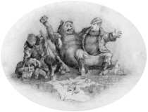

|  |
ИНТЕЛЛЕКТУАЛЬНЫЕ СИСТЕМЫ УПРАВЛЕНИЯ |
Нечеткая логикаSCADA-системыПубликацииLinux |
Дурман - это инструментальное мышление, торжествующая техника и необузданная наука. Они создают нашу действительность - кошмар их самовыражения. Оптимистически настроенный технократ быть может все-таки прав: возможно, мы достигли той точки, когда уже нельзя повернуть назад. Но почему же тогда команда, которая завлекла нас так далеко, веселиться? Почему пассажиры не оторвуться от своих развлечений? И, наконец, если теперь мы, а не бог играем в кости со Вселенной, то как нам уберечься от того, чтобы не влезть в дерьмо?
|
|
|
С автором можно связаться по электронной почте Все коментарии, замечания и дополнения к изложенному здесь чрезвычайно приветствуются. |